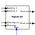

Speicherorganisation
In diesem Blogbeitrag stellt der Autor die verschiedenen Arten von Halbleiterspeichern vor. Dies ist ein weites Feld, daher besteht das Ziel hier darin, sich auf die wichtigsten zu konzentrieren und die Unterschiede zwischen den verschiedenen Arten herauszuarbeiten.
Die Speicherhierarchie
Da es bei der Datenverarbeitung immer um Leistung geht, werfen wir zunächst einen Blick auf die Speicherhierarchie. Wie Sie in der untenstehenden Pyramide sehen können, ist der Speicher in Schichten angeordnet. Die langsamsten Elemente – auch die mit der höchsten Latenz – befinden sich am unteren Ende dieser Pyramide, während die schnellsten an der Spitze dargestellt werden. Stellen Sie sich vor, Ihr Schreibtisch ist die eigentliche CPU, mit einem aufgeschlagenen Buch vor Ihren Augen. Dies ist das Register. Nun lesen Sie in diesem Buch einen Verweis auf ein anderes Buch in Ihrem Bücherregal. Ihr Bücherregal ist hier der Cache. Der Cache selbst ist wiederum in Schichten unterteilt. Nehmen wir an, L1-Cache ist das Bücherregal in Ihrem Zimmer, L2-Cache das Bücherregal in einem anderen Zimmer und L3-Cache Bücher, die in einer Kiste im selben Zimmer aufbewahrt werden. Wenn Sie nun eine Referenz in Ihrem aktuellen Buch (dem auf Ihrem Schreibtisch) haben, die auf ein Buch verweist, das Sie nicht besitzen, müssen Sie in die öffentliche Bibliothek gehen. Die öffentliche Bibliothek ist Ihr RAM. Die Zugriffszeiten sind sehr hoch. Und nehmen wir an, das Buch, das Sie benötigen, ist auch dort nicht verfügbar und muss aus einer Bibliothek in einer anderen Stadt bestellt werden. Dann kommen Sie auf die unterste Ebene, die Festplattenspeichereinheit.

Ganz unten befindet sich auch der günstigste Speicher (pro Byte). Je höher man in der Hierarchie steigt, desto teurer wird der Speicher. In diesem Artikel werden wir unser Wissen über den RAM erweitern. Caches sind komplexer und werden eventuell in einem zukünftigen Artikel behandelt .
RAM und ROM
Das folgende Bild zeigt die Gesamtorganisation einer RAM-Schaltung. RAM steht für Random Access Memory, also einen Speicher mit beliebigem Zugriff. Einfach ausgedrückt: Sie geben eine Adresse ein und erhalten die Daten, die unter der angegebenen Adresse gespeichert sind. Das hier gezeigte Schema gilt auch für den Nur-Lese-Speicher (ROM). Im Gegensatz zum ROM, das persistent ist, ist der RAM flüchtig. Er benötigt also eine kontinuierliche Stromversorgung, da er sonst seine gespeicherten Daten verliert.
Wie zu sehen ist, sind die Hauptbestandteile neben dem Speicher selbst der Spalten- und Zeilendecoder sowie der Lese-/Schreibverstärker. Der Adressdecoder besteht lediglich aus bekannter kombinatorischer Logik, während die Verstärker etwas komplexer sind. Die blauen Punkte an den Schnittpunkten von Zeilen und Spalten markieren die Positionen der Speicherzellen, die je nach Speichertyp unterschiedlich sind und im nächsten Abschnitt erläutert werden.
Die verschiedenen Speicherzellen
statischer RAM (SRAM) |
dynamischer RAM (DRAM) |
|
|
Transistor Nr. 4 |
Transistor Nr. 1 |
Transistor Nr. 6 |

SRAM vs. DRAM
Die statische RAM-Zelle (SRAM) hat den Vorteil, dass der gespeicherte Wert erhalten bleibt, solange die Stromversorgung nicht unterbrochen wird. Ihr klarer Nachteil ist der Schaltungsaufwand von mindestens 4 Transistoren (für ein nmos-Design), aber in der Regel 6 für ein cmos-Design. Das macht sie ideal für kleine Speicherbereiche wie Register und Cache, die sich in der Nähe der CPU befinden. Ergänzend dazu benötigt die dynamische RAM-Zelle (DRAM) nur einen Transistor und einen Kondensator, um den gespeicherten Wert zu halten, muss aber regelmäßig aufgefrischt werden.
Die Registerdatei

An dieser Stelle möchte der Autor die sogenannte Registerdatei vorstellen. Dabei handelt es sich um einen Speichertyp, der über mehrere Leseports verfügen kann. Dies ist nützlich als Eingabe für die ALU, die wir im letzten Blogbeitrag vorgestellt haben. Während die Anzahl der Leseports theoretisch unbegrenzt ist, beträgt die Anzahl der Schreibports in der Regel eins. Der Grund dafür ist, wie sich der aufmerksame Leser vorstellen kann, die Minderung von Gefahren, die bei mehreren Schreibports schwer zu handhaben sind.
(translation: 2024-12-29)